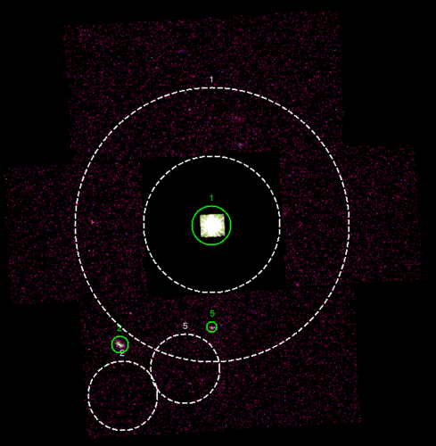
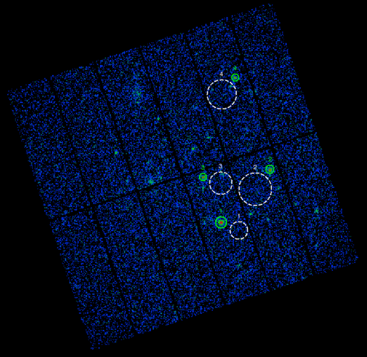

The algorithm searchs for a circular background region in the same CCD where the source is located, except for the source in the central CCD of a MOS observation in SmallWindow mode (PrimePartialW2/3). In that case the background is estimated from an annulus (inner radius = 5.5 arcmin, outer radius = 11 arcmin) centered in the center of the image. Thus the background is estimated from the peripheral CCDs and the central CCD is completely excluded. For EPIC-pn sources the algorithm avoids the same RAWY column of the source in order to exclude out-of-time events from the background estimate.
It is very important to notice that the algorithm search for the best background region (position and size) only based on geometrical criteria, but not looking for a source-free region in the image. The algorithm assumes that some contaminating sources could be contained in the background region. It is the user's responsability to exclude those contaminating sources from the background estimate calculation. That is very critical for some crowded sky regions.
An example of that is the source number 5 in the below MOS image (left side image). This source must be excluded from the background estimate of the source 1 because it falls into the background region of the source 1 (the big annulus).
The XMM Pipeline is able to exclude any contaminating source from the selected background region in an automatic process. That excluding process is based on the knowledge of the brightness and position of all of the sources in the image.
The background region always has a radius larger than 3 pixels, otherwise no background is calculated.
 